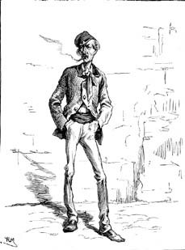
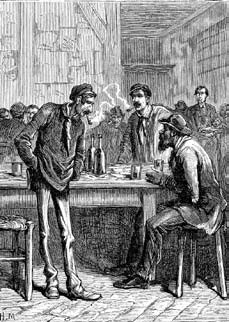

3 Nisan 1897 güncesi, gecenin ilerleyen saatleri
Dalla Piccola'nın günceye yazdığı yazı ansızın sona eriyor. Belki bir gürültü, alt katta açılan kapı gıcırtısı işitti ve sıvıştı. Kabul edersiniz ki Anlatıcı da pek bir şey anlamış değil. Sanki Rahip Dalla Piccola, boş konuşmalar yüzünden Simonini'nin vicdanı rahatsız olduğunda ortaya çıkıyor ve onu olayların gerçeğine davet ediyor; bunun dışında pek de bir şey hatırlamıyor görünüyor. Bu sayfalar kesinlikle doğru olan şeyler aktarmasalar, sanki bu unutkanlık mutluluğunu ve hatırlama mutsuzluğunu sanatıyla Anlatıcı ortaya koymuş gibi görünecek.
Lagrange 1865 ilkbaharının bir sabahında Simonini'yi Lüksemburg Bahçesi'ndeki bir banka davet etmiş ve ona sarımsı kapağı buruşmuş bir kitap göstermişti; 1864 Ekimi'nde Brüksel'de basılmış görünen bu kitabın yazarı yoktu ve adı Dialogue aux enfers entre Machiavel et Montesquieu ou la politique de Machiavel au XIXe siècle, par un contemporain'di.
"İşte" demişti, "şu Maurice Joly'nin kitabı. Şimdi kim olduğunu biliyoruz ama o yurtdışında bastırdığı kitapları burada gizlice dağıtırken biz onun kimliğini ortaya çıkarmakla uğraşıyorduk. Evet, çaba sarf ettik ama zor olduğunu söyleyemem, çünkü siyasi materyal kaçakçılarının büyük bölümü bizim ajanlarımızdır. Böyle yıkıcı bir gizli örgütü kontrol etmenin yolu, kumandasını ele almaktan ya da elebaşlarını maaş bordrosuna eklemekten geçer. Devlet düşmanlarının planları ilahi bir aydınlanmayla keşfedilmiyor. Belki abartarak da olsa, birileri gizli bir örgütün on üyesinden üçünün mouchard olduğunu söyledi; ifademi mazur görün ama halk onları böyle adlandırıyor; altısı imanlı ahmak, biri de tehlikeli bir adamdır. Ama konuyu dağıtmayalım. Joly şimdi Sainte-Pélagie'de hapishanede ve onu mümkün olduğunca tutacağız orada. Ama bizi ilgilendiren, bilgiyi nereden aldığı."
"Peki ama kitap neden söz ediyor?"
"İtiraf ederim ki kitabı okumadım, beş yüz sayfadan fazla – yanlış bir seçim bu, çünkü hakaret dilekçesi dediğin yarım saatte okunup bitirilmeli. Bu konularda uzman olan ajanlarımızdan Lacroix bize bir özetini çıkarttı. Ama canını kurtarmış tek kopyayı size armağan ediyorum. Bu sayfalarda Machiavelli ve Montesquieu'nün sözde ölüler dünyasında sohbet ettiklerini göreceksiniz; Machiavelli iktidarı umursamaz bir bakış açısının kuramcısı gibi görünüyor ve basın ve ifade özgürlüğünü kısıtlama, Cumhuriyetçilerin ilan ettiği türden yasal toplantıları yasaklama gibi eylemlerin meşruluğunu destekliyor. Ve bunu öyle ayrıntılı bir şekilde, günümüze göndermelerle yapıyor ki, en hazırlıksız okur bile bu hakaret sözlerinin imparatorumuzu lekelemek, onu meclisin gücünü azaltma niyetiyle suçlamak ve halkı başkanın iktidarını on yıl uzatmaya, cumhuriyeti imparatorluğa dönüştürmek konusunda çaba göstermeye davet ettiğini anlıyor.
"Beni bağışlayın Bay Lagrange, ama aramızda konuşuyoruz ve benim hükümete olan bağlılığımı iyi biliyorsunuz... Bana söylediklerinizden anladığıma göre bu Joly imparatorun gerçekten yaptığı şeyleri ima ediyor ve bu bilgileri nereden sızdırdığını sormadan edemiyorum..."
"Ama Joly kitabında hükümetin fiiliyata döktüğü eylemlerin yanı sıra niyet ettiği eylemleri de ima ederken sanki bazı şeyleri dışarıdan değil, içeriden görüyormuş gibi davranıyor. Bakın, her bakanlıkta, her hükümet konağında daima bilgi sızdıran bir köstebek, bir sous-marin bulunur. Genellikle bakanlığın yararına olarak yanlış haber sızdırmak için bunların varlığına göz yumulur ama kimi zaman da tehlikeli olabilirler. Şimdi Joly'ye haberleri taşıyanın, daha da beteri onu eğitenin kim olduğunu öğrenmemiz gerekiyor."
Simonini bütün zorba hükümetlerin aynı mantıkla hareket ettiklerini ve Napolyon'un ne yapacağını anlamak için gerçek Machiavelli'yi okumak gerektiğini düşünüyordu; ne var ki bu düşüncesi Lagrange'ın özeti sırasında ona eşlik etmiş bir duyguyu çağrıştırdı: Joly denen bu adamın Machiavelli-Napolyon'una söylettiği sözler, kendinin Piemonte gizli servisleri için hazırladığı belgede Cizvitlere söylettiği sözleri fazlasıyla andırıyordu. Demek ki Joly de onun esinlendiği kaynaktan yani Sue'nün Halkın Gizemi eserinde Peder Rodin'in Peder Roothaan'a yazdığı mektuptan esinlenmişti.
"Bu arada" diye sürdürüyordu sözlerini Lagrange, "Sainte-Pélagie'de sizi Fransız Cumhuriyetçi ortamlarla ilişki kurmuş Mazzini yanlısı bir kaçak olarak tanıtacağız. Orada Orsini suikastıyla ilgili olarak yatan Gaviali adında İtalyan bir tutuklu var. Garibaldi yanlısı bir Carbonaro olarak onunla temas kurmaya çalışmanız gayet doğal karşılanır. Gaviali aracılığıyla Joly ile tanışacaksınız. Her türlü haydudun arasına sıkışmış durumdaki siyasi tutuklularla kalacaksınız. Konuşturun onu, hapishanedeki insanlar can sıkıntısından patlarlar."
"Peki ne kadar kalacağım içeride?" Simonini bunu sorarken aslında yemekler için kaygılanıyordu.
"Size bağlı. Haberleri ne kadar çabuk toplarsanız, o kadar erken çıkarsınız. Avukatınızın becerisi sayesinde sorgu yargıcının sizi temize çıkardığı bilgisi duyurulacak."
Simonini henüz cezaevi deneyimini tatmamıştı. Ter ve idrar kokuları, yutması olanaksız çorbaları yüzünden berbat bir yerdi. Tanrıya şükür, mali durumu iyi olan öteki tutuklular gibi Simonini de her gün ağza atılabilecek yiyeceklerle dolu bir sepet getirtiyordu dışarıdan.
Avludan girilen büyük salonun ortasında bir soba duruyordu; duvarlar boyunca da banklar dizilmişti. Dışarıdan yemek getirtenler genellikle burada doyuruyorlardı karınlarını. Kimi yiyişini ötekilerin bakışlarından sakınmak için elleriyle koruduğu sepetine eğiliyor, kimi arkadaşlarına ve yanına düşenlere cömert davranıyordu. Simonini en cömert olanların, benzerleriyle dayanışma terbiyesi almış sıradan suçlular ve siyasi tutuklular olduğunu fark etmişti.
Torino'da yaşadığı yıllar, Sicilya'da kazandığı deneyimler, Paris'in iğrenç dar sokaklarında geçirdiği ilk günler sonucunda Simonini, kimin doğuştan suçlu olduğunu anlayabilecek bir yetenek geliştirmişti. O dönemde yaygın olan bir görüşe yani suçluların hepsinin raşitik, kambur, tavşan dudaklı, sıracalı, ya da ünlü Vidocq'un dediği gibi –tabii kendi de onlardan biriydi– çarpık bacaklı olması gerekmiyordu; gene de renkli ırklara ait özelliklerin pek çoğunu paylaşıyorlardı: Az kıllıydılar, kafatasları küçüktü, alınları çıkıktı, ön sinüsleri çok gelişmişti, çene kemikleri ve şakakları abartılı büyüklükteydi, çıkık çeneliydiler, göz çukurları eğikti, tenleri esmerdi, saçları gür ve kıvırcıktı, kulakları büyüktü, dişleri orantısızdı; ayrıca duygu konusunda donuklardı, cinselliğe ve şaraba fazlasıyla düşkündüler, acıya dayanıklıydılar, ahlak anlayışları düşüktü, tembeldiler, düşüncesizce hareket ediyorlardı, önceden düşünemiyorlardı, kibirliydiler, kumara düşkündüler, batıl inançlara sahiptiler.
Bir de her gün ona tebelleş olan ve sepetten yiyecek bir şeyler kapmaya çalışan tipler vardı. Bunların yüzleri boydan boya mor ve derin yara izleriyle kaplıydı, dudakları zaçyağının aşındırıcı etkisi yüzünden şişti; burun kıkırdakları kesikti, burun deliklerinin yerinde iki biçimsiz delik vardı; kolları uzun, elleri kısa, iri ve parmaklarına kadar kıllıydı. Simonini suçluyu ele veren işaretler konusundaki görüşlerini değiştirmek zorunda kaldı, çünkü Oreste adındaki şahıs son derece uysal bir adamdı ve Simonini sonunda yiyeceğinin bir kısmını ikram edebildiğinde adam ona bağlandı ve adeta bir köpeğin sevgisini sergilemeye başladı.
Karışık bir öyküsü yoktu: Onun aşk teklifini beğenmeyen bir kızı boğmuştu sadece ve şimdi yargının kararını bekliyordu. "Neden böyle kötü davrandı anlamadım" diyordu, "ona yalnızca evlenme teklif etmiştim. Bana güldü. Sanki bir canavarmışım gibi. Artık var olmamasına üzülüyorum ama saygı görmeyen bir erkek o noktada başka ne yapabilirdi ki? Hem sonra eğer giyotinden kurtulursam cezaevi hiç de fena bir yer değil. Yiyecek bolmuş diyorlar."
Sonra bir gün parmağıyla bir adamı işaret ederek şöyle demişti: "Örneğin şu çok berbat bir adam. İmparatoru öldürmeye kalkışmış."
Simonini böylece Gaviali'yi teşhis etmiş ve ona yaklaşmıştı.

Simonini böylece Gaviali'yi teşhis etmiş ve ona yaklaşmıştı.
"Bizim fedakârlıklarımız sayesinde fethettiniz Sicilya'yı" demişti Gaviali ona. Sonra da açıklamıştı: "Benim değil. Orsini ile ufak tefek ilişkim olması dışında hiçbir şey kanıtlayamadılar. Orsini ve Pieri bu nedenle giyotine gönderildiler, Di Rudio Cayenne'e yollandı ama eğer her şey iyi giderse ben yakında çıkarım."
Orsini'nin öyküsünü herkes biliyordu. Bu İtalyan yurtsever İngiltere'ye gitmiş ve fulminat dö merkür dolu altı bomba yaptırmıştı. 14 Ocak 1858 akşamı, III. Napolyon tiyatroya giderken, Orsini ve iki arkadaşı üç bombayı imparatorun arabasına fırlatmışlar ama amaçladıkları başarıya ulaşamamışlardı: Yüz elli yedi kişi yaralanmış, bunların sekizi sonradan can vermiş ama hükümdar ve yanındakilere hiçbir şey olmamıştı. İdam sehpasına çıkmadan önce Orsini, imparatora yürek paralayıcı bir mektup yazmış ve onu İtalya birliğini korumaya davet etmişti; pek çok kişiye göre bu mektup III. Napolyon'un sonraki kararlarında etkili olmuştu.
"Başlangıçta bombaları ben ve patlayıcı konusunda sihirbaz olan bir grup arkadaşım yapacaktık" diyordu Gaviali. "Ama sonradan Orsini bize güvenmedi. Yabancıların bizden her zaman daha iyi oldukları bilinir ya, o da bir İngiliz'e taktı kafayı; bu İngiliz de fulminat dö merküre takmıştı kafasını. Fulminat dö merkür Londra'da eczanede satılır, çünkü dagerotip için kullanılır; burada Fransa'da ise Çin karamelalarının kâğıtlarını buna batırıyorlar, paketi açınca bum diye patlıyor ve insanlar eğleniyor! Bomba hedefe temas etmeden patlarsa etkili olmaz. Kara barut on metrelik alanda hedefi vuran kocaman ve madeni kıymıklar yaratır; oysa fulminatlı bir bomba hemen unufak olur ve sadece düştüğü yerdeysen öldürür seni. Bu nedenle hepsinden iyisi attığın yeri vuran kurşundur."
"Daima yeniden denenebilir" demişti Simonini. Sonra da eklemişti: "Cephane konusunda iyi olan ve hizmet vermeye yarayan insanlar tanıyorum."
Anlatıcı, Simonini'nin bu oltayı neden attığını bilmiyor. Önceden düşündüğü bir şey mi vardı yoksa içinden geldiğinden, fesatlığından, tedbirsizliğinden mi atmıştı oltayı bilinmez. Her neyse, Gaviali iyi tepki vermişti. "Konuşuruz" demişti. "Yakında çıkacağınızı söylüyorsunuz; sanırım ben de pek fazla kalmayacağım burada. Huchette Sokağı'ndaki Père Laurette'te bulabilirsiniz beni. Arkadaşlarla her akşam orada toplanırız, jandarmaların gelmeyi reddettikleri bir yerdir; birincisi bütün müşterileri her sefer hapse atmak zorundadırlar ama buna üşenirler, ikincisi jandarmanın buraya gireceği kesin olsa da çıkabileceği kesin değildir."
"Güzel bir yermiş" demişti Simonini gülerek, "geleceğim. Ama söyler misiniz, imparator hakkında kötü şeyler yazmış olan Joly adında bir adamın da burada olduğunu öğrendim; öyle mi?"
"O bir idealisttir" demişti Gaviali, "sözcükler öldürmezler. Ama iyi bir insan olmalı. Tanıştırayım sizi."
Joly'nin üzerinde hâlâ temiz giysiler vardı, olasılıkla sakal tıraşı olma fırsatı da buluyordu ve genellikle yalnız başına oturduğu sobalı salona yiyecek sepetli ayrıcalıklı kişiler geldiğinde onların talihini görerek mutsuz olmamak için dışarı çıkıyordu. Aşağı yukarı Simonini ile aynı yaştaydı; hayalperestlere özgü parlak ama gene de hüzünlü bakışları vardı ve pek çok çelişkiyi yansıtan bir adama benziyordu.
"Oturun benimle" demişti Simonini ona, "şu sepetten bir şeyler buyurun, zaten benim için çok fazla. Bu ayaktakımından olmadığınızı hemen anlamıştım."
Joly suskun bir gülümseyişle teşekkür etmiş, bir dilim et ile bir dilim peyniri memnuniyetle kabul etmiş ama havadan sudan söz etmeyi yeğlemişti. Simonini ona şöyle demişti: "Kız kardeşim beni unutmadığı için çok şanslıyım. Varlıklı değildir ama hali vakti yerindedir."
"Ne mutlu size" demişti Joly, "benim kimsem yok..."
Buzlar erimişti. Garibaldi'nin yarattığı ve Fransızların tutkuyla izlediği destandan söz etmişlerdi. Simonini önce Piemonte sonra Fransız hükümetleriyle yaşadığı sıkıntılara değinmişti; devlete karşı yıkıcılık suçundan yargılanmayı bekleyen Joly ise yıkıcılık suçundan değil basit bir dedikodu yüzünden içeride olduğunu söylemişti.
"Bizim gibi okumuş yazmış insanların kendilerini evrenin düzeninde gerekli bir unsur olarak görmesi, cahillerin batıl inançlarına eşit. Dünya düşüncelerle değiştirilemiyormuş. Az düşünce üreten kişiler daha az hataya maruz kalıyorlar, onlar herkesin yaptığını izliyorlar, kimseyi rahatsız etmiyorlar, başarıyorlar, zenginleşiyorlar, iyi pozisyonlara ulaşıyorlar, milletvekilleri, şöhretli edipler, akademisyenler, gazeteciler oluyorlar, ödüllere, nişanlara boğuluyorlar. İşlerini böyle iyi yürütene aptal denir mi? Aptal benim, yel değirmenleriyle savaşmaya kalkan ben."
Üçüncü öğünde Joly hâlâ sadede gelemeyince Simonini hangi tehlikeli kitabı yazdığını sorarak onu biraz sıkıştırmıştı. Joly sözü cehennem diyaloguna getirdi; kitabı yavaş yavaş özetlerken satırlarında adını andığı alçaklıklara öfkesini kusuyordu ve yergi yazısında dile getirdiğinden çok daha fazlasını irdeliyor, yorumlar yapıyordu.
"Anlıyor musunuz? Genel seçim hakkı sayesinde despotizm yaratmayı başardı! Alçak, bu öküz millete başvurarak bir devlet darbesi yaptı. Şimdi bizi yarının demokrasisinin nasıl olacağı konusunda uyarıyor."
Tabii, diye düşünüyordu Simonini, bu Napolyon tam günümüzün adamı, yetmiş yıl önce bir kralın kellesinin uçurulabileceği düşüncesiyle heyecanlanan halkı nasıl dizginleyebileceğini anladı. Lagrange, Joly'nin bazı kişilerden esinlendiğini düşünebilir ama onun herkesin gözü önünde olup bitenleri incelediği ve diktatörün adımlarını daha önceden hesaplayabildiği aşikâr. Benim asıl merak ettiğim gerçek anlamda kimi model aldığı.
Simonini bunun üzerine Sue ve Peder Rodin'in mektubuna üzeri örtülü bir şekilde değinmiş ve Joly neredeyse kızararak gülümseyip evet demişti; Napolyon'un şom tasarılarının rengini değiştirme fikri Sue'nün tanımlamalarından doğmuştu; fark olarak da Cizvitler yerine klasik Machiavelli düşüncesini kullanmıştı.
"Sue'nün o satırlarını okuduğumda ülkeyi sarsacak kitabı yazmak için bir çıkar yol bulduğumu düşündüm. Ne çılgınlıkmış, kitaplar toplatılıyor, yakılıyor ve sen hiçbir şey yazmamış gibi oluyorsun. Sue'nün çok daha azını söylediği halde sürgüne yollandığını da aklıma bile getirmedim."
Simonini huzursuzluk hissediyordu. Kendisi de Cizvitlerle ilgili metni Sue'den kopyalamıştı ama bunu bilen yoktu ve komplo tasarısını başka amaçlar için kullanma hakkını kendinde saklı tutuyordu. Ve işte Joly bunu ondan alarak halkın emrine sunmuştu.
Sonra sakinleşmişti. Joly'nin kitabına el konmuştu ama kendisi piyasada kalan birkaç nüshadan birine sahipti. Joly birkaç yıl cezaevinde kalacaktı, Simonini bu sırada Cavour suikastına ya da Prusya kançılaryasına atfederek kitabı kopyalayabilir ve bunu Lagrange dahil kimse fark etmezdi; Lagrange olsa olsa yeni metinde inanılır bir şeyler olduğunu düşünebilirdi, o kadar. Bütün ülkelerin gizli servisleri sadece başka yerlerden duyduklarına inanırlardı ve yayımlanmamış haberlere güvenilmez gözüyle bakarlardı. Demek ki Simonini huzurlu olabilirdi; Joly'nin ona söylediklerini bilmek gibi bir üstünlüğü vardı ve bunları bilen başka hiç kimse yoktu. Bir tek Lagrange'ın sözünü ettiği, Diyalog adlı yapıtı baştan sona okuma yürekliliğini gösteren Lacroix anlayabilirdi durumu. Lacroix ortadan kaldırılırsa hiçbir sorun kalmazdı.
Artık Sainte-Pélagie'den çıkma zamanı gelmişti. Kardeşçe bir saygıyla Joly'ye veda edince o pek duygulanmış ve şöyle demişti: "Belki bana bir yardımınız dokunabilir. Guédon adında bir arkadaşım var, olasılıkla nerede olduğumu bile bilmiyordur ama arada sırada bana insani yiyeceklerle dolu bir sepet gönderebilir. Bu berbat çorbalar midemi yakıyor ve beni dizanteri yapıyor."
Sonra Guédon denen kişiyi Beaune Sokağı'ndaki Matmazel Beuque'ün kitabevinde bulabileceğini, Fourier yanlılarının hep orada toplandığını söyledi. Simonini, Fourier yanlılarının insanlık için genel bir reform hevesinde olan ama devrimden söz etmedikleri için hem komünistler hem muhafazakârlar tarafından küçümsenen bir tür sosyalist grup olduğunu biliyordu. Anlaşıldığı üzere Matmazel Beuque'ün kitapçı dükkânı imparatorluğa direnen Cumhuriyetçiler için açık liman haline gelmişti ve polis bir Fourier yanlısının sinek bile incitemeyeceğini düşündüğünden orada rahatça buluşabiliyorlardı.
Simonini hapishaneden çıkar çıkmaz ilk iş olarak rapor vermek için Lagrange'ın yanına gitmişti. Joly konusunda bir öfke seli yaratmak istemiyordu, çünkü o Don Kişot'a handiyse merhamet duyuyordu. Şöyle demişti:
"Bay Lagrange, öznemiz şöhret kazandığı bir anda umuda kapılan ama başaramayan biri. Aldığım izlenime göre sizin çevrenizden birinin kışkırtması olmasa bu hakaret dolu satırları yazmayı aklına bile getirmezdi. Bunu söylemek içimi yakıyor ama onun kaynağı aslında sizin kitabı özetlemek için okumuş olduğunu düşündüğünüz Lacroix'dan başkası değil. Olasılıkla kitabı Brüksel'de bastırmakla ilgilenen de odur. Ama neden diye sormayın bana."
"Yabancı bir gizli servisin, belki de Prusya gizli servisinin Fransa'da kargaşa yaratmak için verdiği bir emir neden olabilir. Bu beni şaşırtmaz."
"Sizinki gibi bir ofiste Prusyalı bir ajan mı? Bu bana inanılmaz geliyor."
"Prusya ajanlarının başı olan Stieber dokuz milyon taller ödeyerek Fransa yönetimindeki bütün topraklara casus doldurdu. Söylentilere göre Fransa'ya beş bin Prusyalı çiftçi ile dokuz bin hizmetçi gönderdi ve kahvelere, lokantalara, varlıklı ailelerin yanına casuslar soktu. Bu yalan. Casusların çok azı Prusyalı ve aksanlarından belli olabilecek Alzaslılar bile bunu para için yapan iyi Fransızlardır."
"Peki bu hainlerin kimliklerini tespit edip tutuklatamıyor musunuz?"
"İşimize gelmiyor, çünkü o zaman onlar da bizimkileri tutuklarlar. Casuslar öldürerek değil yalan haber yayarak etkisiz hale getirilirler. Bunu yapmak için de ikili oynayanları bulmamız gerekir. Şimdi, Lacroix hakkında verdiğiniz haber bana tuhaf geldi. Tanrım, nasıl bir dünyada yaşıyoruz, kimseye güven olmuyor... Ondan hemen kurtulmalıyız."
"İyi ama onu yargıya yollarsanız ne o ne de Joly hiçbir suçlamayı kabul etmeyecektir."
"Bizim için çalışan biri asla bir duruşma salonunda boy göstermemelidir ve –genel bir ilkemizi açıklıyorsam da kusura bakmayın– bu sizin için geçerlidir ve geçerli olacaktır. Lacroix bir kazaya kurban gidecektir. Dul eşine de adil bir emekli maaşı bağlanacaktır."
Simonini ona Guédon'dan ve Beaune Sokağı'ndaki kitapçıdan söz etmemişti. Oraya takılanlardan nasıl bir kazanç elde edebileceğini kendi kendine görmek istiyordu. Hem zaten Sainte-Pélagie'de geçirdiği birkaç gün onu perişan etmişti.
Hemen Quai des Grands-Augustins'te bulunan Laperouse'a gitti, lokantanın alt katında eski usul istiridye ve entrecôtes yeniyordu ama birinci katta, cabinets particuliers denen odalarda barbue sauce hollandaise, casserole de riz à la Toulouse, aspics de filets de laperaux en chaud-froid, truffes au champagne, pudding d'abricots à la Venitienne, corbeille de fruits frais ve compotes de pêches et d'ananas sunuluyordu.
Kürek mahkûmlarının da, idealistlerin de, canilerin de, çorbalarının da canları cehenneme idi. Hapishaneler kibar beylerin risk almadan restorana gidebilmelerine de yarıyordu.
Simonini'nin anıları, benzer durumlarda olduğu üzere, sözün burasında karışıyor, günce kopuk kopuk metinlerle doluyordu. Anlatıcı'nın burada Dalla Piccola'nın müdahalesinden medet ummaktan başka çaresi yoktur. İkili artık birlikte ve tam uyum halinde çalışmaktadırlar...
Sonuç olarak Simonini imparatorluk gizli servisine kendini kabul ettirmek için Lagrange'a biraz daha fazlasını vermek zorunda olduğunu sezinliyordu. Poliste ajanı güvenilir kılan ne olabilir? Bir komplonun ortaya çıkarılması. Demek ki ihbar edebilmek için kendisinin bir komplo düzenlemesi gerekiyordu.
Bu fikri ona veren Gaviali idi. Sainte-Pélagie'de soruşturmuş ve onun ne zaman çıkacağını öğrenmişti. Onu Huchette Sokağı'nda, Père Laurette kabaresinde bulabileceğini hatırlıyordu.
Sokağın bitimine doğru yer alan bir evin girişi bir çatlağı andırıyordu, böyle olsa da gene Huchette Sokağı'na da açılan Chat qui Pêche Sokağı'ndaki giriş kadar dar değildi, çünkü neden açıldığı belli olmayan bu girişe insan ancak yan dönerek sığabiliyordu. Merdiven basamaklarından sonra yağ damlaları döken taşlarla örülü koridorlar aşılıyordu; kapılar öyle alçaktı ki odalara nasıl girileceği anlaşılamıyordu. İkinci katta biraz daha pratik bir kapı vardı ve buradan geniş bir mekâna giriliyordu; burası bir olasılıkla eskinin üç dairesi yıkılarak elde edilmişti ve işte burası Père Laurette denen salon ya da oda ya da kabareydi; muhtemelen yıllar önce ölen ve bu adı taşıyan şahsın kim olduğunu bilen yoktu.
Çevreye yayılmış masalar pipo içen ve kumar oynayan adamlarla, yoksul kızların oynadığı oyuncak bebekler misali soluk pudralarla yüzleri buruşmuş kızlarla doluydu ve bunlar kadehlerinin dibini getirmeyen erkeklerden içki dileniyorlardı.
Simonini'nin oraya adım attığı akşam, mahallede biri bir başkasını bıçaklamıştı ve öyle görünüyordu ki kan kokusu herkesi öfkeli hale getirmişti. Belli bir noktada çılgının teki falçatayla kızlardan birini yaralamış, işe karışan patroniçeyi yere yıkmış, onu durdurmaya çalışanları manyakça dövmeye girişmiş, sonunda ensesinde bir sürahi kıran garson tarafından yere devrilmişti. Bundan sonra herkes sanki bir şey olmamışçasına ne yapıyorduysa ona geri dönmüştü.
Simonini, Gaviali'yi orada bulmuştu; hükümdarı öldürmek konusunda onunla aynı görüşleri paylaşan, neredeyse tümü sürgündeki İtalyanlardan, neredeyse tümü patlayıcılar konusunda uzman olanlardan ya da bu konuya merak duyanlardan oluşan arkadaş grubuyla bir masadaydı. Masadakilerin alkol oranı belli bir düzeye ulaşınca geçmişin ünlü suikastçılarının hataları üzerine tartışmaya başlıyorlardı: Cadoudal o zamanlar birinci konsül olan Napolyon'u cehennem makinesiyle öldürmek istemişti, güherçile ve şarapnel karışımıyla yapılan cehennem makinesi belki eski başkentin dar sokaklarında işe yarayabilirdi ama günümüzde kesinlikle etkisiz olurdu (ve işin doğrusu öyle de olmuştu). Fieschi de Louis-Philippe'i öldürmek için aynı anda on sekiz namludan ateş eden bir makine icat etmişti ve Kral dışında on sekiz kişiyi öldürmüştü.

... hükümdarı öldürmek konusunda onunla aynı görüşleri paylaşan, neredeyse tümü sürgündeki İtalyanlardan, neredeyse tümü patlayıcılar konusunda uzman olanlardan ya da bu konuya merak duyanlardan oluşan arkadaş grubuyla bir masadaydı.
"Sorun patlayıcının bileşiminde" diyordu Gaviali. "Barut elde etmek için potasyum klorat, kükürt ve kömürle karıştırıldı ama patlama sadece imalatın yapıldığı atölyeyi havaya uçurdu. Bu karışımı hiç olmazsa kibritte kullanmayı düşündüler ama her bir klorat ve kükürtlü kibrit ucunu sülfürik aside batırmak gerekiyordu. Bu da kolay iş değildi tabii. Sonunda Almanlar otuz yıl önce fosforlu kibritleri icat ettiler, bu sürtünmeyle alev alıyor."
"Bir de pikrik asit var" diyordu bir başkası. "Potasyum kloratın varlığında ısıtılırsa patladığını fark etmişlerdi ve hepsi birbirinden patlayıcı çeşitli barutlar yapmışlardı. Deneyenlerin bazıları hayatını yitirince bu fikir de terk edildi. Nitroselüloz ile uyum sağlayabilir..."
"Öyle mi diyorsun?"
"Kadim simyacılara kulak vermek gerekir. Nitrik asit ve terebentin karışımının bir süre sonra kendiliğinden tutuştuğunu keşfetmişlerdi. Nitrik aside, su emici sülfürik asit eklenirse, her zaman yanma söz konusu olur."
"Ben sadece ksiloidi ciddiye alırım. Nitrik asit nişastayla ya da tahta lifiyle karıştırılır..."
"Sanırım Jules Verne'in romanını yeni okudun sen; o da aya gönderdiği aracı fırlatmak için ksiloidden yararlanıyordu. Oysa bugün nitrobenzol ve nitronaftalinden söz ediliyor. Ya da kâğıt ve kartonu nitrik asitle işlersen ksiloidin benzeri olan nitramidin elde edersin."
"Bunların hiçbiri mükemmel değildir. Söz gelişi bugünlerde tutuşan kâğıt diye de tanınan nitroselüloz çok ciddiye alınıyor; ağırlığına göre patlama gücü barutun altı kat fazlası."
"Ama sabit bir randımanı yok."
Ve bu minval üzere tartışan adamlar dönüp dolaşıp kara barutun erdemine dönüyorlardı ve Simonini kendini Ninuzzo ile sohbet ediyormuş gibi hissediyordu.
Birkaç karaf şarap ikram ettikten sonra grubun III. Napolyon'a duyduğu nefreti körüklemek kolay olmuştu; bu insanlar olasılıkla pek yakın görünen Savoia'nın Roma'yı işgaline de karşı çıkacaklardı. İtalyan Birliği davası diktatörün ölümünü istiyordu. Simonini gene de bu ayyaşların İtalyan Birliği'ni bir noktaya kadar önemsediğini; onların asıl derdinin güzel bombalar patlatmak olduğunu düşünüyordu. Her şey bir yana onun aradığı "içine şeytan kaçmış" adamlar bunlardı.
"Orsini suikastı o beceremediği için başarısızlığa uğramış değildir" diyordu Simonini, "sadece bombalar kötü imal edilmişti. Bizim adamlarımız bombayı doğru zamanlamayla atmak için giyotini göze alıyorlar ama hangi tip patlayıcının kullanılacağı konusunda kesin bir fikre varamadılar; arkadaşım Gaviali ile yaptığım sohbetler sonucunda sizin grubun bize yararlı olacağına ikna oldum."
" 'Bize' derken kimden söz ediyorsunuz?" diye sormuştu yurtseverlerden biri.
Simonini tereddüt edermiş gibi bir izlenim yarattıktan sonra Torinolu öğrencilerin güvenini kazanmak için elindeki bütün kozları oynamıştı: Kendisi Alta Vendita'yı temsil ediyordu, uydurma Nubius'un vekillerinden biriydi, ona daha fazlası sorulmamalıydı, çünkü Carbonari örgütünün yapısı gereği herkes sadece bir üstündeki kişinin kimliğinden haberdardı. Sorun şuydu ki, tartışılmaz etkisi olan yeni bombalar öyle hemen imal edilemezdi; deney üstüne deney yapmak gerekirdi ve neredeyse simyacı gibi doğru maddeler birbirleriyle karıştırılmalı, denemeler açık alanda yapılmalıydı. Kendisi Huchette Sokağı'nda sakin bir mekânı emre sunabilirdi ve harcamalar için ortaya para da koyabilirdi. Bombalar hazır olduğunda, gruptakiler suikast konusunda kafa yormak zorunda değildiler ama atölyede imparatorun ölümünü haber veren ve suikastçıların amaçlarını anlatan küçük el ilanlarını misafir edeceklerdi. Napolyon öldürülünce grup üyeleri bu el ilanlarını şehrin değişik noktalarında dağıtacaklar ve büyük gazetelerin kapılarına bırakacaklardı.
"Siz rahatsız edilmeyeceksiniz, çünkü suikast yüksek düzeyden birileri tarafından ayan beyan görülecek. Emniyette Lacroix adında bir adamımız var. Tek emin olamadığım ona ne kadar güvenebileceğimiz, bu nedenle onunla temas kurmaya çalışmayın, kim olduğunuzu bilirse terfi alma uğruna sizi ihbar edebilir."
Anlaşma heyecan içinde kabul edilmişti ve Gaviali'nin gözleri parlıyordu. Simonini mekânın anahtarlarını ve ilk alışverişler için yetecek miktarda para vermişti ona. Birkaç gün sonra işbirlikçileri ziyarete gittiğinde denemelerin iyi bir noktada olduğunu görmüştü; iyiliksever bir matbaacının bastığı el ilanlarının yanı sıra harcamalar için biraz daha para bırakmış, ayrılırken de şöyle demişti: "Yaşasın Birleşik İtalya! Ya Roma ya ölüm!"
Ama o akşam, o saatlerde ıssızlaşan Saint-Séverin Sokağı'ndan geçerken, peşinden gelen birinin adım seslerini işittiğini hissetti; öyle ki kendisi durduğunda arkasındakinin ayak sesleri de kesiliyordu. Yürüyüşünü hızlandırmıştı ama gürültü gittikçe yaklaştı ve sonunda birinin gizlice değil açıktan açığa onu izlediğini anladı. Ve ansızın arkasında beliren hızlı solumanın ardından bir el onu şiddetle yakaladı ve –Chat-qui-Pêche Sokağı'ndan bile dar olan– oracıkta açılan Salembrière Çıkmazı'na fırlattı; belli ki takipçisi oraları iyi tanıyordu ve doğru anı ve mekânı seçmişti. Duvara çarparak ezilen Simonini yüzüne değmek üzere olan bıçağın parıltısından başka bir şey görmüyordu. Karanlık yüzünden saldırganın yüzünü seçemiyordu ama Sicilya aksanıyla hırlayan sesi işitince kim olduğunu anladı: "İzinizi bulmak için altı yıl uğraştım sevgili pederim, ama başardım!"
Bu, Bagheria cephaneliğinde karnına sapladığı iki hançerle bıraktığından emin olduğu Ninuzzo Usta'nın sesiydi.
"Ölmedim, yaşıyorum, çünkü sizden sonra oradan merhametli bir can geçti de yardımıma koştu. Üç ay boyunca hayatla ölüm arasında gidip geldim ve hâlâ belim boyunca uzanan bir yara izim var... Yataktan kalkar kalkmaz araştırmaya başladım. Şöyle şöyle bir papaz gören var mı diye soruşturdum. Sonunda Palermo'da onu Noter Musumeci ile gördüğünü söyleyen biri çıktı ve bu kişinin Albay Nievo'nun dostu olan Piemonteli bir Garibaldi yanlısına da çok benzediğini ekledi. Nievo'nun, gemisi buharlaşmışçasına deniz kazasında can verdiğini de öğrendim; tabii ben neden buharlaştığını çok iyi biliyordum ve bunu kimin yaptığını da anlamıştım. Nievo'dan Piemonte ordusuna, oradan da Torino'ya ulaşmak işten bile değildi; o soğuk şehirde bir yıl kaldım ve herkesi sorguya çektim. Sonunda Garibaldi yanlısı o adamın adının Simonini olduğunu, bir noterlik bürosu varken orayı terk ettiğini ve Paris'e kaçtığını öğrendim. Nasıl becerdiğimi sormayın, gene beş parasız olarak Paris'e geldim ama bu şehrin bu kadar büyük olduğunu bilmiyordum. İzinizi bulabilmek için çok dolaştım. Bunun gibi caddeleri arşınlayarak ve yolunu şaşırmış zengin beylerin boğazına bıçak dayayarak karnımı doyurdum. Hayatta kalabilmem için günde bir kişi yetiyordu. Hep bu mahalledeydim. Sizin gibi birinin şık evlerden çok, buralarda tapissi franchi dedikleri mekânlarda dolaştığını tahmin ediyordum. Kolayca tanınmak istemiyor idiyseniz, uzun, kara bir sakal bırakmalıydınız..."
İşte Simonini sakallı burjuva tipini o anda benimserken, izlerini kaybettirmek için fazla çaba sarf etmediğini de fark etti.
"Yani" diye bitirdi sözlerini Ninuzzo, "size bütün hikâyemi anlatacak değilim; sizin bende açtığınız yaranın aynını karnınıza açmak bana yetecek ama ben daha bilinçli çalışacağım. Bagheria cephaneliğinde olduğu gibi buradan da geceleri kimse geçmez."
Ay biraz yükselmişti ve Simonini şimdi Ninuzzo'nun yassı burnunu, hınçla parlayan gözlerini görüyordu.
Simonini konuşacak takati olunca şöyle dedi: "Ninuzzo, bilmelisiniz ki bunu yaptıysam emirlere uymak için yaptım; bu emirler çok yükseklerden geliyordu ve öyle kutsal bir yetkiydi ki kişisel duygularımı göz önünde bulundurmam olanaksızdı. Ve gene bu emirler uyarınca burada bulunuyorum ve hem kralın hem papanın tahtına destek vermek için başka işler peşinde koşuyorum."
Simonini soluk soluğa konuşuyordu ama bıçağın ucunun belli belirsiz de olsa yüzünden uzaklaşmakta olduğunu hissediyordu. "Siz hayatınızı kralınıza adadınız" diye devam etmişti, "bazı görevleri anlayabilirsiniz... Kutsal görevlerdir bunlar... Sırf bu kutsallık adına korkunç eylemlere imza atmak zorunda kalırsınız. Anlıyor musunuz?"
Ninuzzo Usta hâlâ pek bir şey anlamıyordu ama tek amacının intikam olduğunu belli etmişti: "Bu yıllarda çok açlık çektim ve sizi ölü görmek de beni doyurmayacak. Karanlıkta yaşamaktan bıktım. İzlerinizi bulduğumdan beri beylere yakışır restoranlara girip çıktığınızı görüyorum. Her ay sizin gibi doyabileceğim, sizin gibi yatabileceğim parayı hatta daha fazlasını bana vermeyi vaat ederseniz sizi bırakırım."
"Ninuzzo Usta, size her ay küçük bir bütçenin çok daha fazlasını vaat ediyorum. Bu günlerde Fransız imparatoruna karşı bir suikast hazırlığı içindeyim ve unutmayın ki sizin kralınız, Napolyon el altından Garibaldi'ye yardım ettiği için tahtını yitirdi. Cephane işinden anlayan siz, şu anda gerçek anlamıyla cehennem makinesi adını vereceğimiz bir patlayıcıyı hazırlayabilmek için Huchette Sokağı'nda toplanmış olan bir grup yiğitle tanışmalısınız. Eğer onlara katılırsanız sadece tarihe geçecek bir eylemde yer almakla ve cephane konusundaki olağanüstü bilginizi ortaya koymakla kalmayacak –bu suikastın çok yüksek bir makam tarafından ısmarlandığını göz önünde bulundurursak– bütün hayatınız boyunca size yetebilecek büyük miktarda para da kazanabileceksiniz."
Cephane lafını duyduğu anda Ninuzzo Usta'nın Bagheria'daki o geceden beri köpüren öfkesi yatışıverdi ve "Ne yapmam gerekiyor öyleyse?" diye sorduğu anda Simonini bıçağı kendi avcunun içinde hissetti.
"Çok basit, iki gün sonra saat altıya doğru bu adrese gidin, kapıyı çalın; bir atölyeye gireceksiniz ve sizi Lacroix'nın yolladığını söyleyin. Arkadaşlarınız zaten daha önceden uyarılacaklardır. Ama sizi tanıyabilmeleri için bu ceketinizin yakasına kırmızı bir karanfil iliştirin. Saat yediye doğru ben de orada olacağım. Elimde parayla."
"Gideceğim" demişti Ninuzzo, "ama bunda bir numara varsa, artık nerede oturduğunuzu bildiğimi unutmayın."
Simonini ertesi sabah Gaviali'ye gitmiş ve zamanın daralmakta olduğu konusunda onu uyarmıştı. Herkesin ertesi gün saat altıda buluşmaları gerektiğini bildirmişti. Önce kendi yollayacağı Sicilyalı bir cephane ustası gelecekti ve işlerin gidişatını gözden geçirecekti, sonra kendisi gelecek ve en son da her konuda teminat vermek için Bay Lacroix orada olacaktı.
Bundan sonra Lagrange'a gitmiş ve ona imparatoru öldürmek üzere bir suikast hazırlandığından haberdar olduğunu anlatmıştı. Komplocuların ertesi gün saat altıda Huchette Sokağı'nda buluşacaklarını ve patlayıcıyı siparişi veren kişiye teslim edeceklerini bildirmişti.
"Ama dikkatli olun" demişti. "Siz bir keresinde bana verdiğiniz sırda, bir gizli örgütün on üyesinin üçünün casus, altısının ahmak ve birinin tehlikeli bir adam olduğunu söylemiştiniz. İşte, orada tek bir casus olarak ben bulunacağım, geri kalan sekizi ahmak olacak ve gerçekten tehlikeli olan kişi de yakasına kırmızı bir karanfil takacak. O adam benim için de tehlikeli sayıldığından küçük bir pandomima kopmasını ve şahsın tutuklanmamasını, hemen oracıkta öldürülmesini istiyorum. İnanın bana, olayın fazla yankı uyandırmaması için bu en iyi yol olacaktır. O şahıs sizinkilerden tekiyle bile konuşursa büyük bir felaket olur."
"Sizi temin ediyorum Simonini" demişti Bay Lagrange. "Adam ortadan kaldırılacaktır."
Ninuzzo saat tam altıda, yakasında karanfiliyle Huchette Sokağı'na gelmişti. Gaviali ve ötekiler gururla araçlarını ona göstermişlerdi. Simonini yarım saat sonra orada olmuş, Lacroix'nın gelişini müjdelemişti ve saat tam altı kırk beşte güvenlik güçleri atölyeyi basmıştı. Simonini ihanet var diyerek bağırmaya başlamış ve tabancasını jandarmalara çevirmiş olsa da bir el havaya ateş etmişti. Jandarmalar da ona yanıt verircesine Ninuzzo'yu göğsünden vurmuşlardı; işi kılıfına uydurmak için, komploculardan birini daha temizlemişlerdi. Ninuzzo Sicilya lehçesiyle küfürler sayıklayarak yerde yuvarlanmayı sürdürürken, Simonini jandarmalara ateş edermiş gibi yapmayı sürdürerek ona ölümcül darbeyi vurmuştu.
Lagrange'ın adamları, Gaviali ve ötekileri suçüstü yakalamışlardı; daha doğrusu yarım yapılmış bombaların ilk örnekleriyle bunları neden imal ettiklerini açıklayan el ilanları ortadaydı. Ağır sorgulama sonucunda Gaviali ve arkadaşları onlara ihanet eden –öyle sanıyorlardı– gizemli Lacroix'nın adını vermişlerdi. Lagrange'ın onu ortadan kaldırması için fazladan bir nedendi bu. Polis tutanaklarında onun suikastçıların tutuklanmasına katıldığı ve sefillerden birinin kurşunuyla can verdiği yazılıydı. Övgü sözleriyle hatırası anıldı.
Eylemcilere gelince, sessizce yargılanmaları yeğlendi. "O yıllarda" diye anlatıyordu Lagrange Simonini'ye, "imparatora yapılacak suikast söylentileri pek yaygındı ve bu söylentilerin çoğu söylence değildi; Cumhuriyetçilerin ajanları, fanatikleri heveslendirmek için kalleşçe yayıyorlardı bu haberleri." III. Napolyon'un hayatına kastetmenin revaçta olduğu düşüncesini yaymak yararsızdı. Böylece suikast hazırlığında yakalanan bu eylemciler sıtma ateşleriyle can verecekleri Cayenne'e gönderildiler.
İmparatorun hayatını kurtarmanın semeresi iyiydi. Joly konusundaki iş on bin frank, suikastın ortaya çıkartılması otuz bin frank kazandırmıştı Simonini'ye. Atölye kirası ve bomba imali için alınan malzeme giderleri beş bin frank tuttuğundan cebine net otuz beş bin frank kalıyordu ki hayalini kurduğu üç yüz bin franklık sermayenin onda birinden biraz fazlaydı bu.
Ninuzzo'nun uğradığı sona sevinmiş, kendisine güvenen ama aslında şeytanın teki olan Gaviali için biraz üzülmüştü. Tabii ki suikast düzenlemeye kalkışan tehlikeleri göze almalı, kimseye de güvenmemeliydi.
Aslında ona asla kötülüğü dokunmamış olan Lacroix'ya yazık olmuştu. Ama dul karısına iyi bir maaş bağlanacaktı.